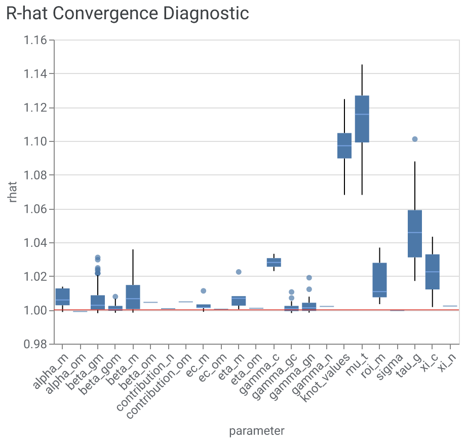
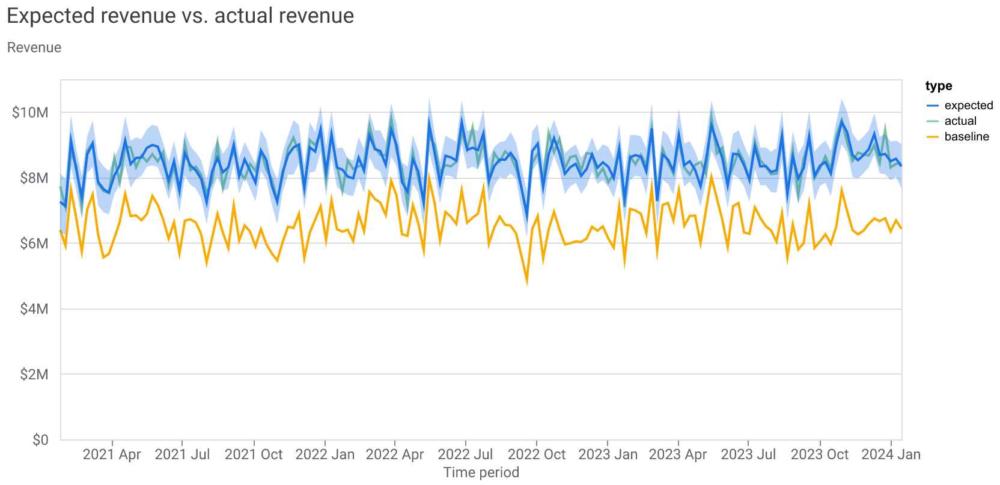
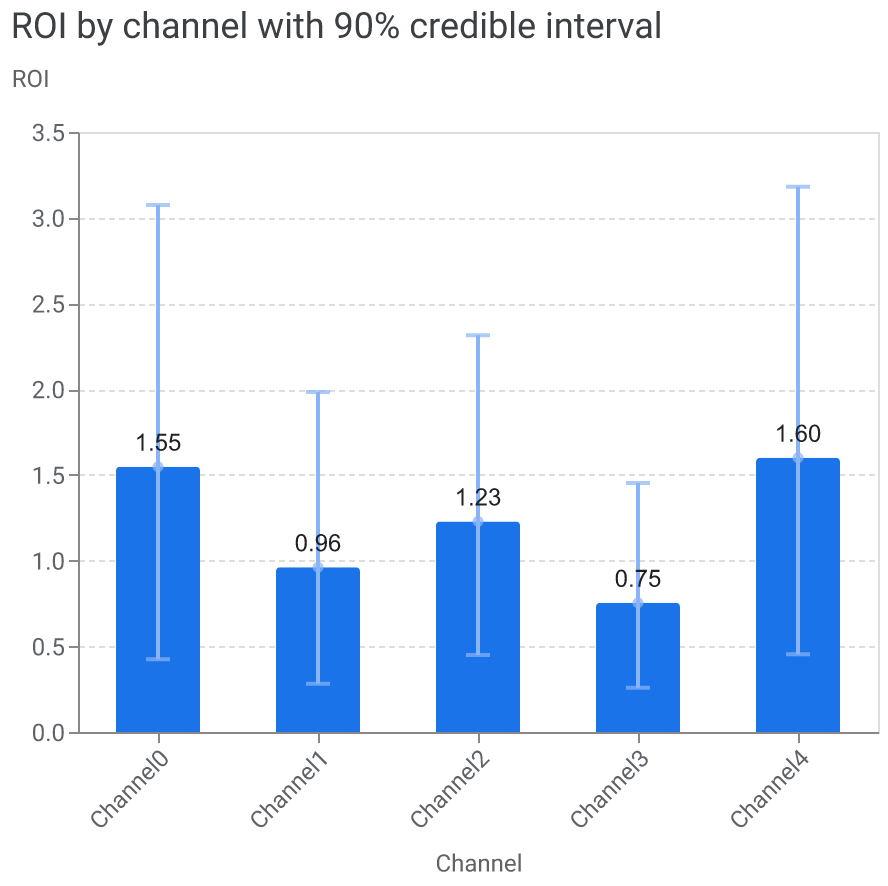
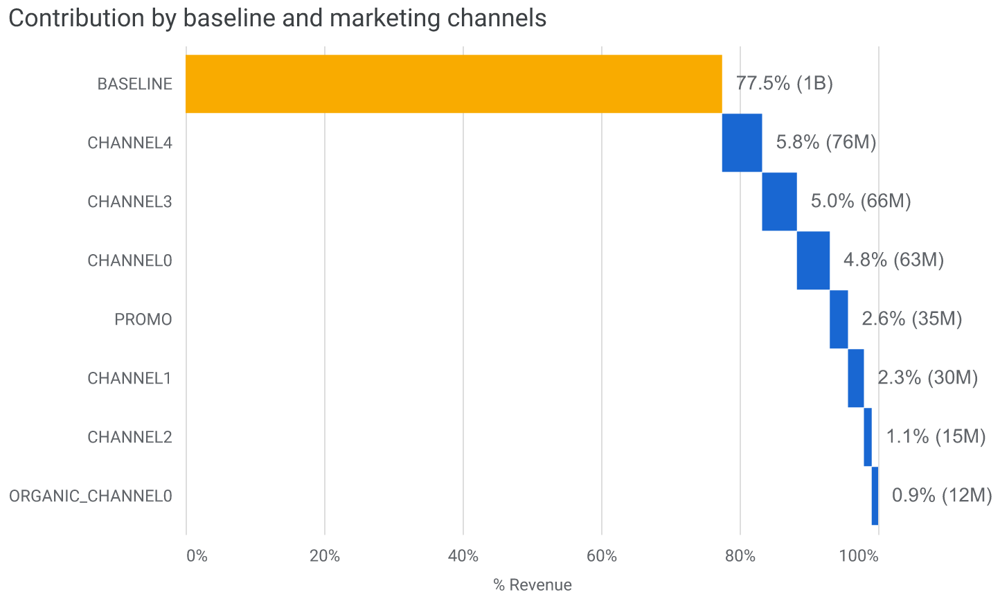
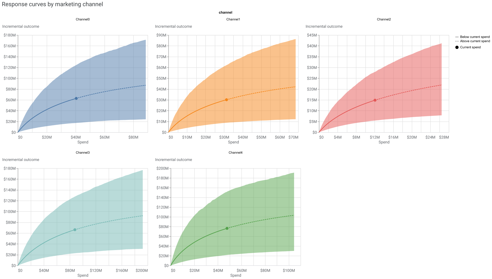
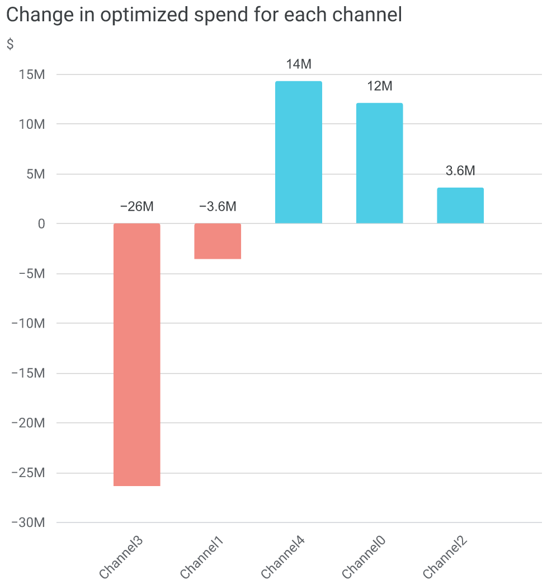

Meridian is Google's open-source marketing mix model. It is Bayesian, it works best with data by region (geo-level), and it lets you put what you already know about each channel's ROI into the model as a prior, including results from experiments. This guide takes you from raw data to a budget recommendation: load the data, set the priors, fit the model, check that it can be trusted, read the results, and optimise the budget.
Everything below was run with google-meridian 2.2.0 (the JAX version) on Python 3.12, using Google's simulated demo dataset. The charts and numbers are the real output of that run.
What Meridian needs
One row per region per week, with:
| Column | What it is |
|---|---|
| KPI | The outcome: conversions, sign-ups or revenue |
| Revenue per KPI | Optional, but needed to report ROI in money when the KPI is not revenue |
| Media and spend | For each paid channel, the exposure (impressions, clicks, GRPs) and the spend |
| Controls | Things that move the KPI but aren't marketing: competitor activity, prices, macro factors |
| Population | Per region, so that large and small regions can share one model |
| Optional | Organic media (unpaid exposure), non-media treatments (promotions), reach and frequency |
Aim for two to three years of weekly data. Region-level data is what makes Meridian strong: 40 regions over three years give the model far more variation to learn from than one national series over the same period. The demo dataset has exactly that: 40 regions, 156 weeks (January 2021 to January 2024), five paid channels, one organic channel, a promotion flag and two controls.
Install
pip install --upgrade google-meridianMeridian runs on a CPU, but sampling is much faster on a GPU. On Colab, choose a GPU runtime (the free T4 is enough for the demo), and on a Linux machine with an NVIDIA GPU install google-meridian[and-cuda]. For timing on a CPU, see the sampling step below.
Step 1: Load the data
import numpy as np
import pandas as pd
import tensorflow_probability.substrates.jax as tfp
from meridian import constants
from meridian.analysis import optimizer, summarizer, visualizer
from meridian.analysis.review import reviewer
from meridian.data import data_frame_input_data_builder
from meridian.model import model, prior_distribution, spec
df = pd.read_csv(
"https://raw.githubusercontent.com/google/meridian/refs/heads/main/"
"meridian/data/simulated_data/csv/geo_all_channels.csv",
index_col=0,
)
builder = data_frame_input_data_builder.DataFrameInputDataBuilder(
kpi_type="non_revenue",
default_kpi_column="conversions",
default_revenue_per_kpi_column="revenue_per_conversion",
)
builder = (
builder.with_kpi(df)
.with_revenue_per_kpi(df)
.with_population(df)
.with_controls(df, control_cols=["sentiment_score_control", "competitor_sales_control"])
)
channels = ["Channel0", "Channel1", "Channel2", "Channel3", "Channel4"]
builder = builder.with_media(
df,
media_cols=[f"{c}_impression" for c in channels],
media_spend_cols=[f"{c}_spend" for c in channels],
media_channels=channels,
)
builder = builder.with_non_media_treatments(df, non_media_treatment_cols=["Promo"])
builder = builder.with_organic_media(
df,
organic_media_cols=["Organic_channel0_impression"],
organic_media_channels=["Organic_channel0"],
)
data = builder.build()The builder checks the data as it goes: every region needs every week, spend can't be negative, and the column names have to exist. Fix anything it complains about here; it is much cheaper than finding it after a long sampling run.
Step 2: Set the priors
A prior is what the model believes about a channel's ROI before it sees your data. Meridian puts the prior directly on ROI, which is a quantity you can reason about ("this channel probably returns between 0.5 and 3 per dollar"), instead of on abstract model coefficients.
prior = prior_distribution.PriorDistribution(
roi_m=tfp.distributions.LogNormal(np.float64(0.2), np.float64(0.9), name=constants.ROI_M)
)
model_spec = spec.ModelSpec(prior=prior, enable_aks=True)
mmm = model.Meridian(input_data=data, model_spec=model_spec)- LogNormal(0.2, 0.9) keeps ROI positive, with a median of about 1.2 and a wide range. It is Meridian's default and a reasonable starting point when you know little.
- Use
np.float64. Meridian 2.x works in 64-bit numbers, and passing plain0.2and0.9fails with a dtype error. Google's demo wraps the values for this reason. enable_aks=Truelets the model pick how flexible the time trend and seasonality need to be (automatic knot selection), instead of you choosing it by hand.- Experiments make the best priors. If you have run a lift test or a geo experiment on a channel, use it to set that channel's prior. With Meridian GeoX this is a few lines of code; see my Meridian GeoX tutorial.
Step 3: Fit the model
mmm.sample_prior(500)
mmm.sample_posterior(n_chains=10, n_adapt=1000, n_burnin=500, n_keep=1000, seed=0)Those are the settings in Google's demo: ten chains, each keeping 1,000 draws after warm-up. Google quotes about 25 minutes on a free Colab T4 GPU. To check the code on my laptop's CPU (an Apple M1), I used a lighter run of four chains with 500 warm-up and 500 kept draws: sampling took about 5 minutes, and the whole script, including every report and the optimiser, about 10. Use the full settings for real decisions; a light run is fine for checking that the data and code work.
Step 4: Check that the model can be trusted
Before reading any ROI, run Meridian's health checks:
health = reviewer.ModelReviewer(mmm).run()
health.output_model_health_card(filename="health_card.html", filepath=".")The health card checks convergence, whether the model fits better than a baseline, whether the ROI estimates moved away from the priors (or the data had nothing to say), and whether the baseline is plausible. On the demo data the model scored 99.8 out of 100 and passed all six checks: every parameter had an R-hat below 1.2, the baseline had no chance of being negative, R² was 0.77 with a MAPE of 2.7%, and all five channels' ROI moved away from the prior, a sign that the data was informative. The card also scores which channels would benefit most from being calibrated with an experiment.
Convergence on its own is shown by R-hat: values close to 1.0 mean the chains agree, and anything above 1.2 needs more sampling or a simpler model.
visualizer.ModelDiagnostics(mmm).plot_rhat_boxplot()
Then compare the model's fit with the actual KPI:
visualizer.ModelFit(mmm).plot_model_fit()
Look for the expected line tracking the actual line without lagging behind turning points, and a baseline that looks believable: if the baseline is near zero, the model is crediting marketing with almost all of your sales, which is rarely true.
Step 5: Read the results
The quickest overview is Meridian's two-page HTML summary:
summarizer.Summarizer(mmm).output_model_results_summary(
"summary_output.html", ".", "2021-01-25", "2024-01-15"
)The individual charts come from MediaSummary and MediaEffects:
media_summary = visualizer.MediaSummary(mmm)
media_summary.plot_roi_bar_chart()
media_summary.plot_contribution_waterfall_chart()
visualizer.MediaEffects(mmm).plot_response_curves()
Channel4 and Channel0 return the most per dollar (about 1.6 and 1.5), and Channel3 the least (0.75), even though Channel3 takes 40% of the budget. Notice how wide the intervals are: Channel4's ROI could plausibly be anywhere from about 0.5 to 3.2. That uncertainty is real, and it is the reason to report intervals and to calibrate with experiments rather than act on the point estimates alone. Across all channels, paid media drove about 19% of the outcome (90% interval 13% to 26%), with the rest coming from the baseline, the promotion and organic media.


The response curves are what turn an MMM into a budget tool. Where a curve is still steep at current spend, the next dollar still buys a lot; where it has flattened, extra money buys little. The shaded bands are wide on purpose: they show how uncertain the model is, and the uncertainty grows the further you move from the spend levels you have actually run.
Step 6: Optimise the budget
budget_optimizer = optimizer.BudgetOptimizer(mmm)
results = budget_optimizer.optimize()
results.output_optimization_summary("optimization_output.html", ".")
results.plot_spend_delta()By default, the optimiser keeps the total budget fixed and moves money between channels to get the most out of it, within a limit of 30% up or down for each channel so that it doesn't recommend changes far outside your data. You can also give it a different total budget, or a new period with different prices, through optimize(new_data=..., budget=...).

On the demo data, the optimiser moved $26 million out of Channel3 (its 30% limit) and $3.6 million out of Channel1, and put it into Channel4, Channel0 and Channel2 (each up 30%). With the same $219.5 million, the predicted incremental outcome rose by about 2.5% and ROI from 1.14 to 1.17. That is a modest gain, and typical: optimisers mostly shift money from channels past their saturation point to ones that still have room. Channel3 has the lowest ROI and its next dollar returns only about 0.4, which is why it gives up the most.
Step 7: Save the model
from meridian.schema.serde import meridian_serde
meridian_serde.save_meridian(mmm, "saved_mmm.binpb")
mmm = meridian_serde.load_meridian("saved_mmm.binpb")Save after every serious run. Loading a saved model lets you rerun the reports, the optimiser or new scenarios without sampling again.
Making the model trustworthy
An MMM will always produce numbers. Whether they are right depends on things the code can't check for you:
- Calibrate with experiments. Channels that move together (for example, search and social both rising every December) are hard for any MMM to tell apart. A geo experiment on one of them gives the model an anchor. Meridian's
CalibrationBuilderturns a Meridian GeoX result into that channel's ROI prior directly. - Hold out recent weeks. Fit the model without the last few months and check how well it predicts them. A model that only fits the past is describing, not explaining.
- Check the results against what you know. If a channel you switched off for a month shows no dip in the baseline, or a brand-new channel shows the highest ROI, find out why before you move budget.
- Treat the optimiser as a direction, not an order. Move budget in steps, measure what happens, and refit.
Checklist
- Two to three years of weekly data, by region if you can get it, with spend and exposure for every paid channel.
- ROI priors that reflect what you know, and experiment results as priors where you have them.
- Full sampling settings for real decisions; a GPU makes that practical.
- A clean health card and R-hat below 1.2 before you look at ROI.
- A plausible baseline and a model fit that follows turning points.
- Credible intervals reported with every ROI, not just the point estimate.
- Budget changes made in steps, measured, and fed back into the next model.